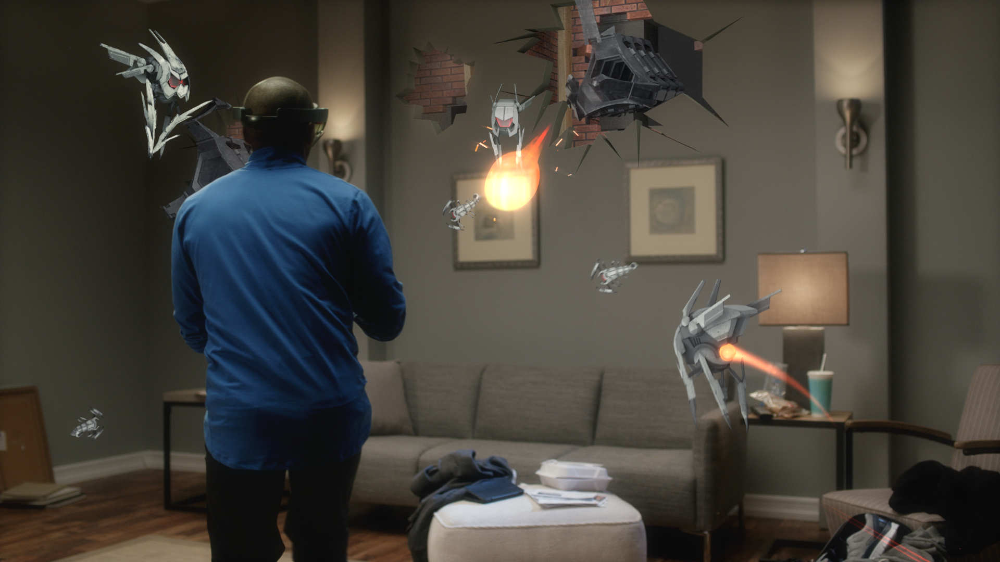
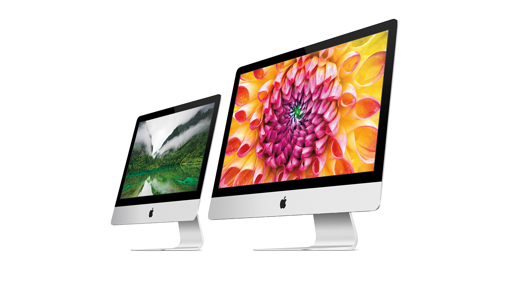
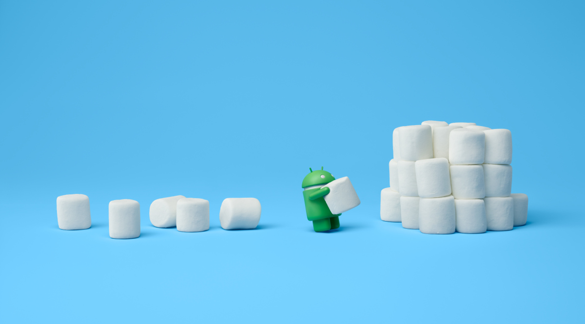

August 18th, 2015, Arstechnica
Google today revealed a new smart home hub in the form of the OnHub, a $200 cylindrical router that promises a "new way to Wi-Fi." Users can control it via an app, and Google has promised frequent software updates for the device.
The device supports not only 802.11 a/b/g/n/ac, but also Bluetooth 4.0 and a few smart home protocols. One such protocol is Weave, the Android team's Internet of Things (IoT) communications layer that it announced at Google I/O alongside Brillo, its Android-derived OS for IoT. It also supports Thread, an IoT wireless protocol created by Google's Nest Labs and Samsung. OnHub also offers IEEE 802.15.4, the basis for Zigbee, another IoT protocol that is popular in many devices.
Smart home communications are kind of a mess right now, so Google appears to be future-proofing the OnHub with a ton of protocol support. It is missing Z-Wave support though, which is probably the most popular smart home protocol.
The device supports 2.4 and 5GHz Wi-Fi with some pretty beefy specs, including a dual-core, 1.4GHz Qualcomm Atheros IPQ8064 with 1GB of RAM and 4GB of storage. With specs like this, we wouldn't be surprised to hear that this runs the Android-based Brillo OS. Surprisingly, there's also a speaker. The big downside is the port selection. There's a single USB 3.0 port, one Ethernet port for your modem, one Ethernet port for a computer, and that's it. All other devices need to connect wirelessly.
Microsoft Hololens

April 30th, 2015, CNET
Putting on the HoloLens is easy: twist a wheel on the back of the device to adjust how tight the headband is, and plop it onto your head. The headband and the visor can move independently of each other, so you'll be able to get things situated just right. You can also slide the visor in and out, so it's closer to or further away from your face -- the HoloLens doesn't rest on your nose, and folks who wear glasses (including prescription lenses) have told me they felt fine using it.
It's a fairly simple, light device. It also feels sturdy, though these are prototypes and we were politely asked not to test exactly how much stretching they could take.
Let's address the biggest hurdle HoloLens adoption will face: the field of view is rather small. Virtual reality experiences like the HTC Vive and the Oculus Rift absolutely encapsulate you, with high-resolution displays that fill your field of view.
The projected images you'll see with HoloLens, by contrast, take up a decidedly smaller space: the optical project lenses that create the illusory objects we'll interact with are about an inch tall, creating a holographic field that feels like looking at a 20-inch screen from a few feet away. You will see objects in your periphery, and I definitely get the feeling of tunnel vision. But we're also aiming for an entirely different sort of experience than virtual reality.
Apple

The idea behind iMac has never wavered: to craft the ultimate desktop experience. The best display, paired with high-performance processors, graphics, and storage — all within an incredibly thin, seamless enclosure. And that commitment continues with the all-new 21.5‑inch iMac with Retina 4K display. Like the revolutionary 27‑inch 5K model, it delivers such spectacular image quality that everything else around you seems to disappear. Adding up to the most immersive iMac experience yet — and another big, beautiful step forward.
Android

The latest generation of Android will follow along nicely with the sweet-flavored names of the past, this time dubbed Marshmallow. There's still plenty to uncover inside Android 6.0 Marshmallow, but we do know this version promises to follow in the Material Design footsteps created by its predecessor and focus on even greater polish for the entire platform.
Android 6.0 Marshmallow exists only in Developer Preview mode for the moment, but through this lens we can gain a reasonable grasp of what is coming when it hits devices later this year. The biggest features coming in this version are small things people will appreciate every day, like individual app permissions, native support for fingerprint sensors, and granular context features for Google Now. We're also going to see developers do more with Chrome, better app-to-app communication, and new power management features.
Windows
 Microsoft is moving swiftly to address complaints aimed at both the Surface Book and the Surface Pro 4. In response to user complaints on its support forums, the company has said it is working to resolve problems ranging from random crashes to boot problems and battery being drained when in hibernation mode.
In its short tenure as a hardware maker, Microsoft has become the defacto trailblazer for Windows-running devices. It all started with the lofty promise that its Surface tablet could replace your laptop. We were skeptical about it three years ago, but after the Surface Pro 3, Microsoft nearly perfected the formula and showed veteran computer manufacturers how hybrids should be made.
Now, Microsoft introduces the Surface Book as the "ultimate laptop." Like the Surface tablets before it, this laptop takes a unique spin on the notebook format that's been around for over 40 years. Between the 3:2 aspect ratio, 13.5-inch screen and its practically-trademarked "dynamic fulcrum" hinge, there isn't any machine on the planet like the Surface Book – and then, with the touch of a button and a gentle tug, it becomes a tablet.
Microsoft is moving swiftly to address complaints aimed at both the Surface Book and the Surface Pro 4. In response to user complaints on its support forums, the company has said it is working to resolve problems ranging from random crashes to boot problems and battery being drained when in hibernation mode.
In its short tenure as a hardware maker, Microsoft has become the defacto trailblazer for Windows-running devices. It all started with the lofty promise that its Surface tablet could replace your laptop. We were skeptical about it three years ago, but after the Surface Pro 3, Microsoft nearly perfected the formula and showed veteran computer manufacturers how hybrids should be made.
Now, Microsoft introduces the Surface Book as the "ultimate laptop." Like the Surface tablets before it, this laptop takes a unique spin on the notebook format that's been around for over 40 years. Between the 3:2 aspect ratio, 13.5-inch screen and its practically-trademarked "dynamic fulcrum" hinge, there isn't any machine on the planet like the Surface Book – and then, with the touch of a button and a gentle tug, it becomes a tablet.